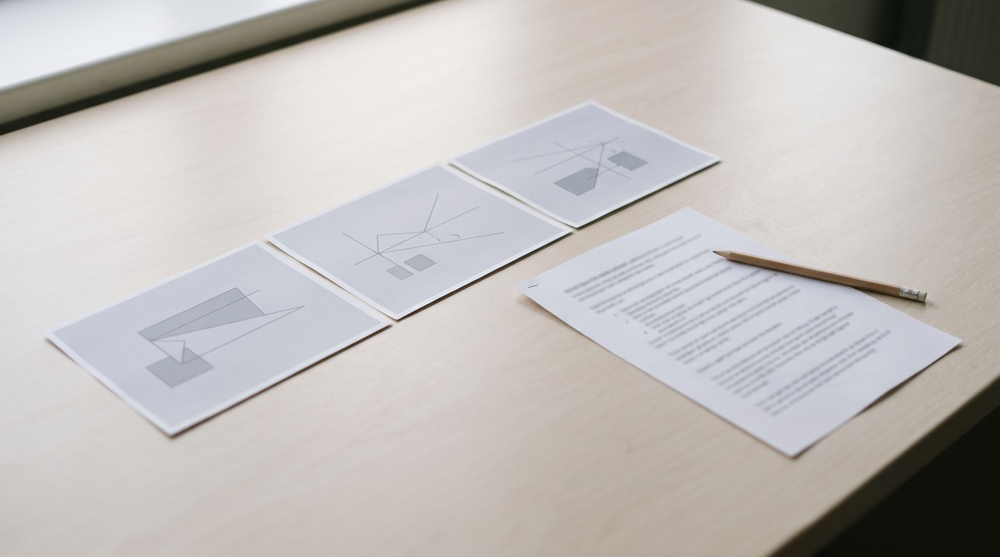

How to turn a Panopto lecture into notes, even when the download button is missing
Your lecturer or university decides if a Panopto recording can be downloaded, and by default only creators and admins can do this. If you see a Download button, save the MP4 and turn it into notes on your own computer with the slides included. If there is no button, use the transcript Panopto lets you download and its built in notes, and ask the lecturer for the file.
You missed a lecture, or you sat through it and want proper notes before the exam. The recording is in Panopto inside your university's learning system, and it plays fine. But there is no download button anywhere, and pasting the link into a transcription site just gets you a login page.
Nothing is wrong with your account. Whether you can download a Panopto lecture is a setting your lecturer or university controls, not you. I will explain that setting, what Panopto gives you for free when downloads are off, and how to get notes with the slides beside the words when the file is allowed.
Why is there no download button on my Panopto lecture?
Panopto lets the person who owns a folder choose who may download its recordings. Pace University's Panopto download guide says by default only the creator of the recording and site-wide administrators can download it. The other choices in that menu go from No one, to Admins only, up to Authenticated users with access. That last one means everyone allowed to watch it.
The setting can sit on a whole course folder or on one single video. Cambridge's lecture capture help explains a subfolder can inherit the download setting from its parent folder. So one course can allow downloads while the next one does not. That is why a friend on another course may have the button and you do not.
So a missing button is a deliberate choice. A school can have good reasons, like a guest speaker who agreed to be recorded but not shared. Do not try to get around a download that has been switched off. Screen recording it or using a browser trick goes against what the lecturer chose, and it may break your university's rules.
| What you see | What it means | What to do |
|---|---|---|
| A Download button in the viewer | Downloads are allowed for you | Save the MP4 and make notes from it |
| No Download button, but captions on | You can watch, not keep | Download the transcript and use Panopto notes |
| No button and no captions | Nothing to download yet | Ask the lecturer for captions or the file |
| A Panopto link pasted into an online tool | The tool hits your university login | It will not work, the video is not public |
What is the free way to get notes when I cannot download it?
Panopto already has two things built in, and most students never open them. The first is the transcript. Solent University's student guide shows when a video has captions, you can open More Actions in the viewer and choose Download transcript. You get a .txt file of everything that was said.
But there is a catch. The same guide says that file has no timestamps, so you cannot see where in the lecture a sentence came from. And it only exists if captions were made for that video, which depends on your school.
The second is Panopto's own Notes tab. Monash University's notes guide says notes you type while watching are stamped with the moment in the lecture. So clicking one jumps back to it, and you can download them as a .txt file. They are private by default.
- Open the lecture and check the viewer for a Download button first.
- If there is none, open More Actions and choose Download transcript.
- Watch at your own speed and type short notes in the Notes tab at the moments that matter.
- Download your notes, then paste the transcript and your notes into one file before you study.
This works, and it costs nothing. But neither file has the slides. In a lecture the slide is half the meaning, because the lecturer says "this term here" and points at a formula you will never see in the transcript.
How do I get the slides beside the words?

This needs the MP4, so it only works when the Download button is there, or when you ask the lecturer and they send you the file. Most will say yes to a student who explains they need it for revision. Once the file is on your computer, the rest is easy.
I built VideoDoc because I wanted my AI to read the lectures I study from, and a transcript alone kept losing the diagrams. In VideoDoc you pick Use a local file, choose the MP4 and press Make document. What comes out is a PDF and a Markdown file holding the words with their times, plus a picture of each slide placed beside what the lecturer was saying while it was on screen. When the recording switches between the lecturer's face and the slides, VideoDoc keeps the slides. A slide that stays up for ten minutes appears once, and not forty times.
It all runs on your own computer, so the lecture never goes up to anyone's server. This matters when the recording was only shared with your class. You can then give the Markdown to ChatGPT, Claude or NotebookLM and ask for a one page summary of each topic, and it can see the slides too. If the document is going to a study group, VideoDoc can black out the lecturer's face in the camera box. It does this both in the saved pictures and in the screenshots inside the document.
VideoDoc cannot open a Panopto link, because Panopto lectures sit behind your university login and VideoDoc only works with public videos or a file you already have. It cannot help with a lecture you are not allowed to download, and it should not. If your lecturer already shares the slides as a PDF and you only need the words, the free Panopto transcript is quicker. On a laptop without a graphics card, turning an hour of audio into text takes a fair while.
Try it on the last lecture you were allowed to download.
Free to try on your own computer. Pro is $19 once, for two machines.
If your notes are for revision across a whole course, I wrote about turning lecture recordings into searchable notes, and about pulling just the slides out of a video when the slides are all you need.
Quick questions
Can I download a Panopto video as a student?
Only if the folder or the video has downloads switched on for students. By default only the creator and site admins can download. So if you see no Download button in the viewer, ask your lecturer.
How do I get a transcript of a Panopto lecture?
If the video has captions, open More Actions in the viewer and choose Download transcript. You get a .txt file of the spoken words without timestamps.
Can I take notes inside Panopto?
Yes. Notes you type in the Notes tab are linked to the moment in the lecture and are private by default. You can download them as a .txt file.
Is it allowed to screen record a Panopto lecture?
If downloads are switched off, the lecturer or university chose that. Recording around it can break your university's rules, so ask the lecturer for the file instead.
Open your hardest lecture tonight, check for the Download button, and if it is not there, ask your lecturer for the file.

I am a telecom engineer and business analyst from Pakistan, and I build small honest desktop tools under Designesh. I made VideoDoc because I wanted my AI to read the lectures I study from. Everything here is tested on my own machine first.